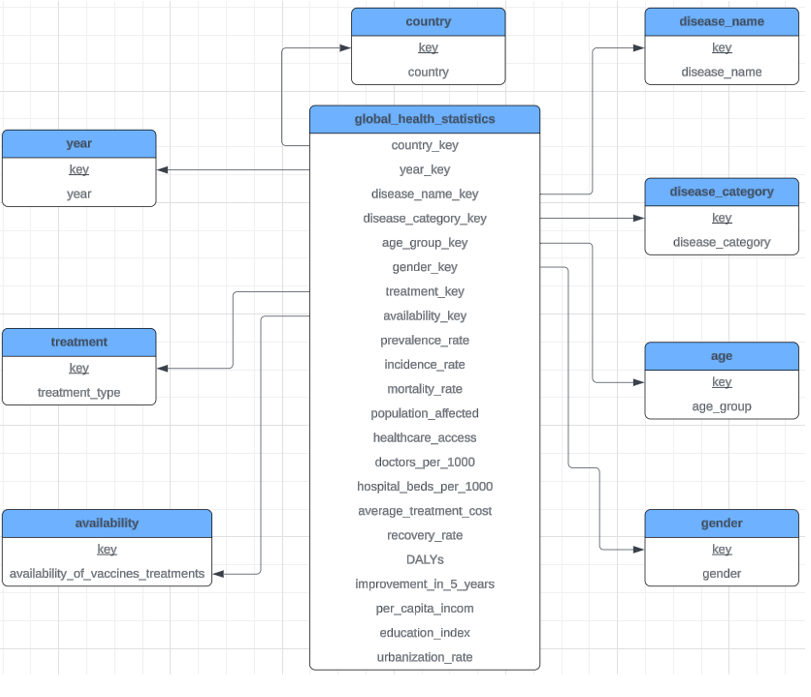
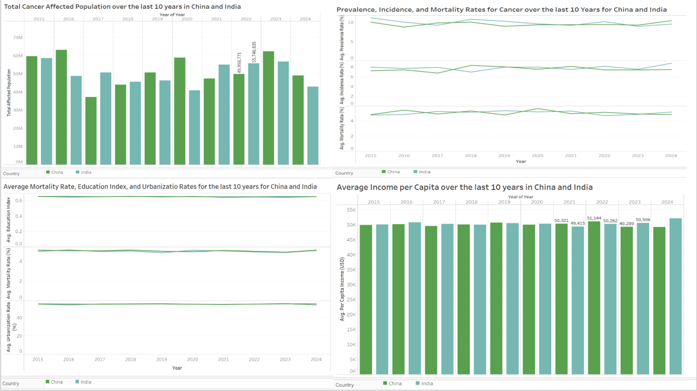

Introduction
We have chosen a global health statistics dataset to analyze. Our focus is on Cancer trends in India and China over a period of ten years.
Skills Showcased
- AWS
- Data Visualization
- Data Analysis
- Excel
- Data Cleaning
- PostgreSQL
- SQL
- Python
- Tableau
Visualizations


Dataset
The dataset includes 1 million synthetic data points covering 20 countries from 2000 to 2024, focusing on incidence, mortality, treatments, and outcomes.
Main Concerns
- Age Groups
- Limited Date Data
- Accuracy
Star Schema
Dimensions: 8 (e.g., country, disease category, gender).
Facts: 14 (e.g., prevalence rate, mortality rate, population affected).
Research Questions
- Total number of affected citizens annually (2015–2024).
- Impact of education, income, and urbanization on mortality rates.
- Variation in prevalence, incidence, and mortality rates.
Findings
Data suggests similar trends for both countries, but external sources indicate China has a higher mortality rate, urbanization, education, and income per capita.
Conclusion
Our findings suggest possible inaccuracies in the dataset, highlighting the need for validation with authoritative sources.
Thank you! Please reach out with any questions.